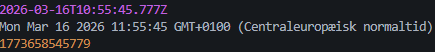

The Date object is used to work with dates and time. Usually, you create a Date instance with the keyword 'new':
const date = new Date();
Now we can access several methods like:
date.getFullYear()
date.getMonth()
date.getDate()
etc.
An even faster way to display time is by simply using console.log like so:
console.log(new Date());
console.log(Date());
console.log(Date.now());

UTC date + time
Local Time
Unix Epoch Time (Miliseconds since Jan. 1st 1970)
Lets say we need to show what day it is today. This can be done in a couple of ways:
const days = ['Sunday', 'Monday', 'Tuesday', 'Wednesday',
'Thursday', 'Friday', 'Saturday',];
app.get('/days/v1', (req, res) => {
res.send({ data: days[new Date().getDay()] });
});
Here we plot the days in an array starting from Sunday (cause 'Murica). getDay() returns a number from
0-6
with 0 being Sunday and 6 being Saturday. We use getDay() to index in the array, which then returns the
matching day name
This is fine to use, but also time consuming since we are manually inserting the days into an array
Another option is to us toLocaleString like so:
app.get('/days/v2', (req, res) => {
const weekday = new Date().toLocaleString('en-uk', { weekday: 'long' });
res.send({ data: weekday });
});
This skips making the array and returns Monday. 'en-uk' and { weekday: 'long'} can be swapped out for
what is necessary
It could be 'da-dk' and { weekday: 'short'} which would give it in danish and a short version of the
day, for example Mon